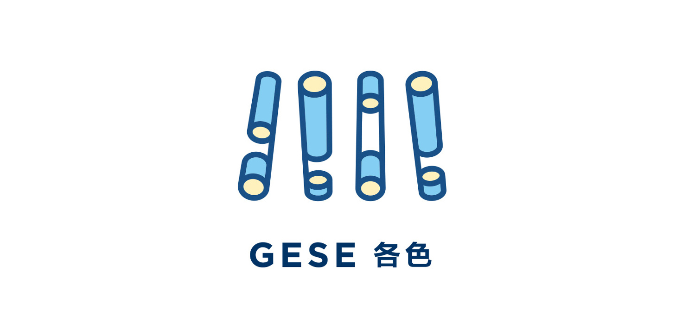

最近一段时间，App 或网页中插画元素逐渐多了起来，也许是因为扁平化趋势的发展，纯色简单的设计组件上更难创作出新的内容。设计师为了体现自己的价值🌝，所以在 GUI 创作上将一部分精力投入到插画上，以使得 App 更加「出彩」。
为了跟上这种趋势，同时也是提高自己的业务能力，我开始更进一步的学习 illustrator，希望能帮助自己更有效率的做一些简单的插画或图标。通过一些教程资料和折腾摸索，发现了很多以前没有注意到的地方，比如之前在其他工具上需要很多精力才能完成的创作，发现 Ai 里其实就可以轻松办到。
3D工具
1. 利用3D工具绘制立体插画
平时在浏览一些设计作品时，会看到一些看起来很舒服的立体插画，有时候就想情不自禁的尝试一下，但如果没有绘画基础，没有做过专业的透视练习，做出来的感觉可能就完全不对。这个时候如果利用好 Ai 的 3D 功能，其实可以帮助我们做出很多具有完美透视效果的插画。

▲上图是设计师 Nod Young 为客户各色设计的一个具有立体风格的品牌标志第一步，创作需要 3D 凸出的截面图形 第二步，选择菜单中的《》，如果是要做平行透视的立体插画，可以在 第三步，使用扩展 第四步，扩展之后就可以在此图形的基础上进行创作了
2. 利用3D贴图工具绘制热气球
之前在做运营插画的时候需要一个热气球的元素，于是就尝试用 Ai 画了起来，但是在做热气球上纹路的时候开始纠结了，上面的纹路用钢笔工具勾了几遍都感觉弧度不是特别完美。后来就想，既然热气球是 3D 的效果，为什么不尝试用3D 工具呢？后来发现，这种效果可以直接通过Ai 的 3D 贴图功能快速实现完美的热气球纹理。 第一步，热气球的 3D 效果是通过一跟带弧度的线从重心点旋转而成，所以需要先画出这跟 第二步，选择菜单，调整透视角度 第三步，制作热气球贴图， 第四步，使用贴图
形状生成器
在做一些图形创作时，设计师会通过一些布尔运算 而形状生成器在我眼中就是一款更高级的布尔运算工具， 选中需要进行布尔运算的图形，使用快捷键，调用
快捷键
1. 快速调整渐变颜色
alt 点击色板 选中取色工具，按住shift，快速从画面中取色
2. 切换拾色器方案
Hold down Shift key and click on the color bar will let you toggle through the color profiles: Grayscale, RGB, HSB, CMYK, Web Safe RGB.
3. 显示或隐藏图层
⌘ + Click Visibility Icon = toggle view mode (Outline/Preview) Opt + Click Visibility Icon = hide other layers (Opt + click again will show all) Click Visibility Icon & Drag = toggle multi layers